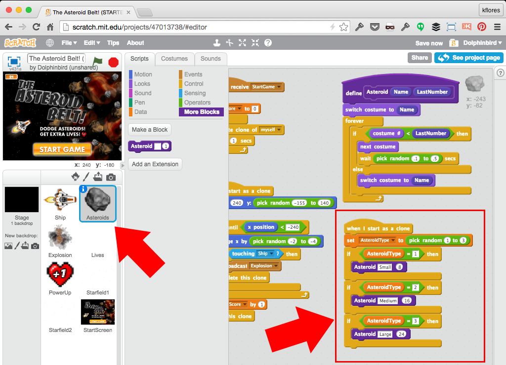

The Asteroid Belt! Game
Build upon a few techniques we learned in past CoderDojo sessions!
-
Make Ship sprite fly all around with Arrow keys
-
Make the background Starfield continuously scroll left
-
Clone animated Asteroids for the Ship to dodge (using a custom function block)
-
Keep track of Asteroids passed with a Score counter
-
Create a Lives counter and offer a life PowerUp (clone)
-
Provide a "Start Game" screen and feature via broadcast
Don't forget to run your game after each step!
Sign in at Scratch
Go To: http://scratch.mit.edu/

CoderDojo Indigo Studio
Go To: http://scratch.mit.edu/studios/585122/ and click The Asteroid Belt (STARTER)
Click the "See inside" button
Notice the sections: Title, Instructions and Notes and Credits
Click the "Remix" button
This will make a copy of the project under your name
Rename the Project
It's a good practice to name your project something unique
Music Loop
Shortcut: You already have looping sound code attached to your Stage!
Ship Control with Keys
Shortcut: Rotation, Direction and Arrow keys control already coded. (Note: next costume + Speed variable)
Multi-Sprite Scroll Technique
Use 2 or more sprites animated at matched speed, but offset...
When moving sprite gets to its own end, it jumps back to other side.
Multi-Sprite Scroll Technique
Use 2 or more sprites animated at matched speed, but offset...
Starfield1 sprite continuously scroll left (start x = 0), then loop.
Multi-Sprite Scroll Technique
Use 2 or more sprites animated at matched speed, but offset...
Starfield2 sprite continuously scroll left (start x = 465), then loop.
We Need Asteroids!
Set up our Score variable. Let's start cloning Asteroids (every 1 second); Where are they?
Tell each Clone what to do...
Where it should start; show itself; move across screen; increment score; delete itself!
Now you need to let your Ship crash...
Use a sensing block to detect the collision between Ship and Asteroid, broadcast an "Explosion" message; then delete the clone.
Set up an explosion...
Hide on start; Receive the "Explosion" message, play a sound, go to the ship and cycle costumes (at the front layer); then hide. Is our ship indestructible?!?

Broadcast a "ResetShip" message
Set up a broadcast on the "Explosion" sprite to tell the Ship what to do...
The Ship should listen to both broadcasts
Hide upon "Explosion" (destroyed); A new ship should appear at the starting position upon "ResetShip"...
Let's set up our Lives counter
Check out this sprite's costumes. Start with 3 lives. If Lives reduces to 0, end the game with a broadcast and stop all scripts command.
Lose a life upon "Explosion" broadcast
When "Explosion" is broadcast, reduce Lives counter by 1; Switch costume to specific number (= to lives remaining).
Power Up: Extra Life!
Offer a PowerUp clone every 20 seconds. Shortcut: Reuse "most" of the clone code from the Asteroids sprite. Add the broadcast "PowerUp" and a sound effect.
Now count the PowerUp...
Our Lives sprite needs to receive the "PowerUp" message and add +1 to the Lives counter and a life to the sprite display. (Set a Maximum = 5).
Animate the Small Asteroid
Let's add some polish by animating the "Small" Asteroid (Look at the sprite's costumes.) We'll come back to more asteroids, later...
Let's set up a Start Screen
This will become the ONLY sprite with a "Green Flag Start" block... NOTE: Your game will be "broken" for a few steps!
Ship set up upon "StartGame" message
Replace the "Green Flag Start" block on the Ship sprite with the receive "StartGame" message block...
Asteroids set up upon "StartGame" message
Replace the "Green Flag Start" block on the Asteroids sprite with the receive "StartGame" message block...
Explosion set up upon "StartGame" message
Replace the "Green Flag Start" block on the Explosion sprite with the receive "StartGame" message block...
Lives set up upon "StartGame" message
Replace the "Green Flag Start" block on the Lives sprite with the receive "StartGame" message block...
PowerUp set up upon "StartGame" message
Replace the "Green Flag Start" block on the PowerUp sprite with the receive "StartGame" message block...
Starfield1 set up upon "StartGame" message
Replace the "Green Flag Start" block on the Starfield1 sprite with the receive "StartGame" message block...

Starfield2 set up upon "StartGame" message
Replace the "Green Flag Start" block on the Starfield2 sprite with the receive "StartGame" message block...
Add more Asteroid types with a custom function block
Create an "Asteroid" function block with "Name" string input and "LastNumber" number input.
Define your Asteroid function block
Move your asteroid clone code to the function block. Replace hard-coded values with variables.

Use the Asteroid function in your Asteroid clone instructions
Add some randomness (Asteroid 1, 2, or 3); Use the Asteroid block with correct variables.
Congratulations!
You built a cool Asteroids game! Now, here are a few Challenges:
-
Make the Speed variable also affect the speed of the Asteroids and bonus life PowerUp
-
Give your ship lasers to blast the Asteroids!
If you got stuck anywhere, see the completed project with comments here: http://scratch.mit.edu/projects/46744040/!
/